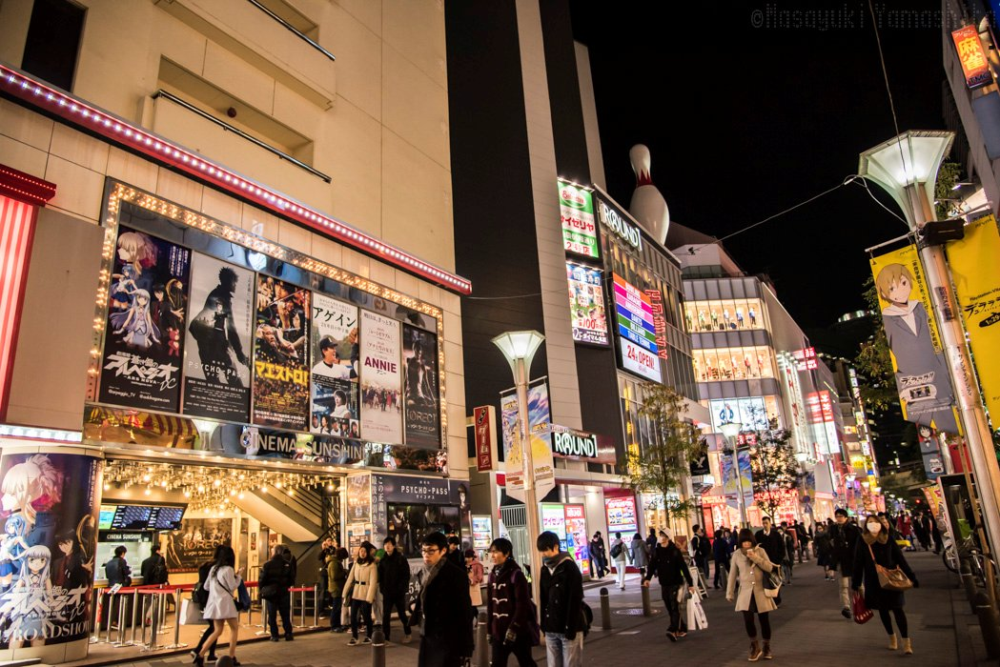
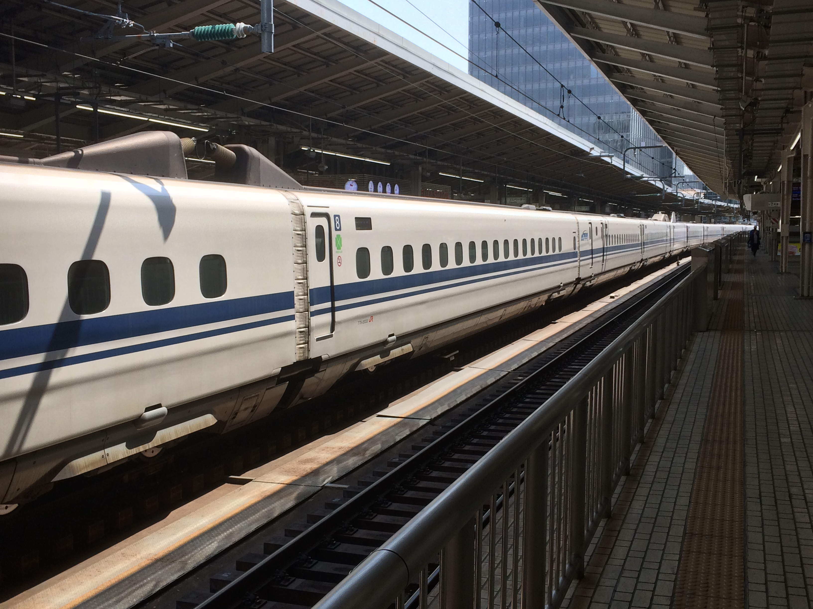
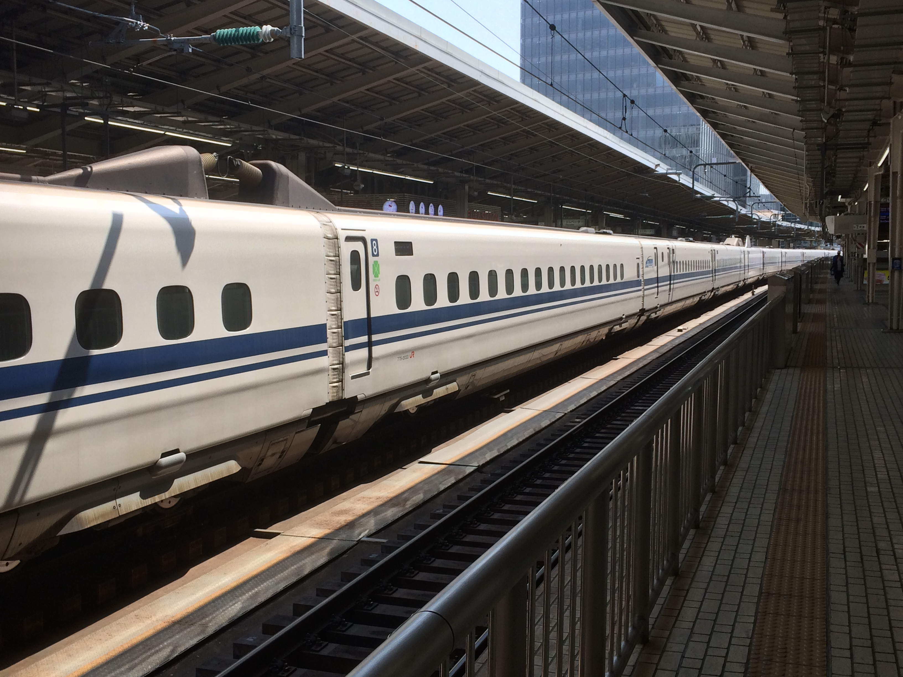

April 2019
I start my travels
Mo
Tu
We
Th
Fr
Sa
Su
the start
Whether I believe it or not, its 8am and I fly into Narita to start my travels. We clear passport control, get on the local train into Tokyo using small tickets.
robot expedition
Despite our jetlag (intensified by our apartment being on a very busy road), we went to the Miraikan Museum, dedicated to robots, where we saw Asimo. At Gundam shopping centre, we had a VR ride called Attack On Titan made after a popular anime series.


anime adventure!
We went to Ikebukuro anime district to buy merchandise for my sister, Isabelle. It was very noisy and busy, so daddy walked us through a huge park for some peace and quiet, but this turned out to be a cemetery. Then we went to a lovely restaurant just behind the cemetery to avoid the rush hour on the underground. fish market
We went to Tsukiji fish market. Daddy ate black sesame seed ice cream. We had some fresh sashimi at the fish market too. to end the day, we visited the shinjuku gyoen national garden where we saw some amazing cherry blossom.


out of toykyo
We got up early to vacate our lovely little flat and Isabelle helped us to get on the right bullet train from Tokyo to Hackoni where we will visit mount fuji. We had a lovely “bento box” lunch which we had to hurry for as to not miss our train. 

everything Hakone
We woke up at 10! Having awoken at 5 then listening to the birds for ages. It’s nice and calm here, so different to Tokyo! Got out about 11, breakfast of doughnuts and plum cider (soda 😆) at ninja café. Personally, I quite liked this breakfast, but my dad somewhat disagreed. Then took a funicular and cable car to the top. Over sulphurous gasses coming out of the volcano aka rotten egg smell.
Kanazawa train-trip
After efew buses and trains, the one swim and a bento box luanch we get to Kanazawa starting our next leg of the journy. Then we do absoluty nothing and sit around in bed as strongly suggested by Isabelle (and I must admit somewhat me).
Then we do absoluty nothing and sit around in bed as strongly suggested by Isabelle (and I must admit somewhat me).
Kanazawa circuit
We walk to a fresh fish market and eat Japans finest fish than to a park then to Kanazawa castle where we take photos of its lush gardens and whight walls.